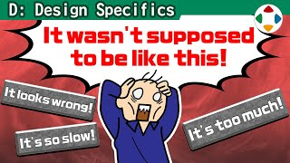
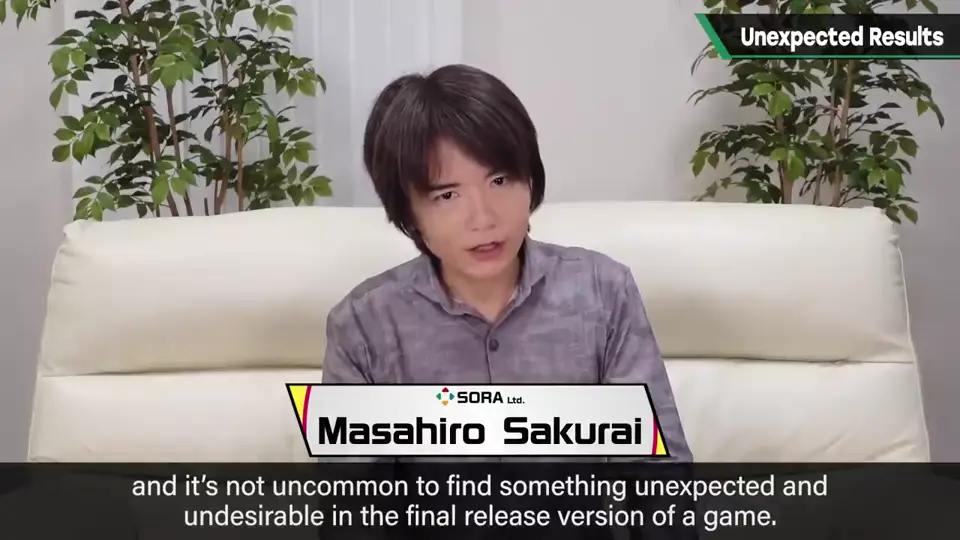
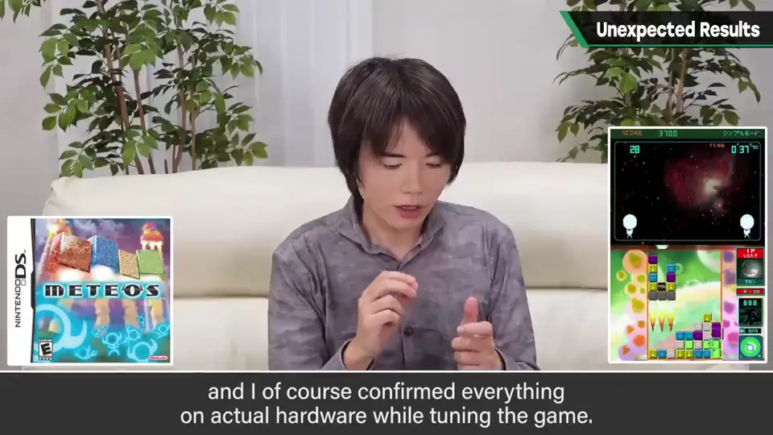
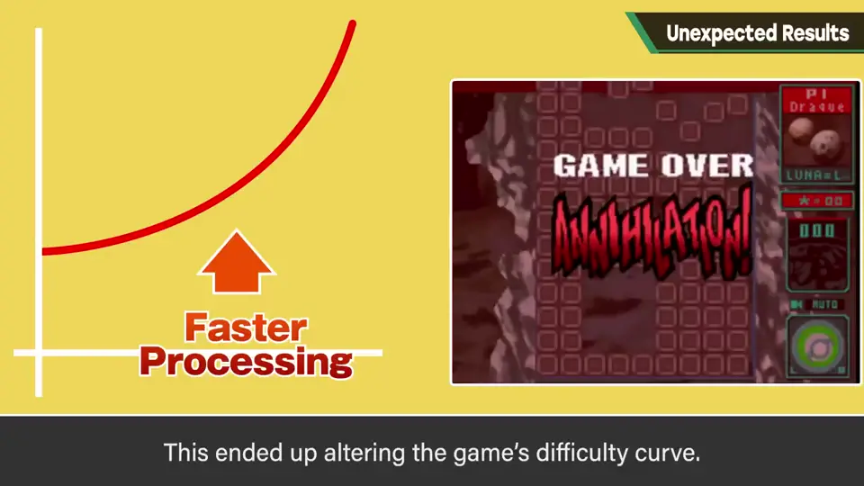
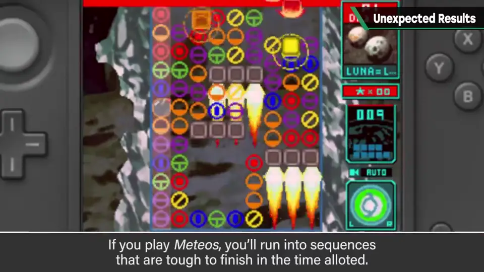
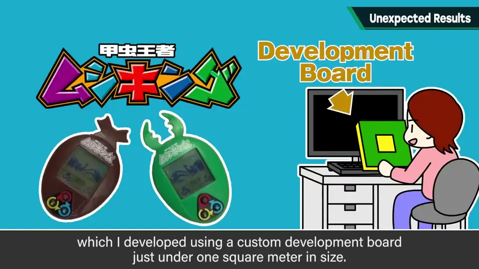
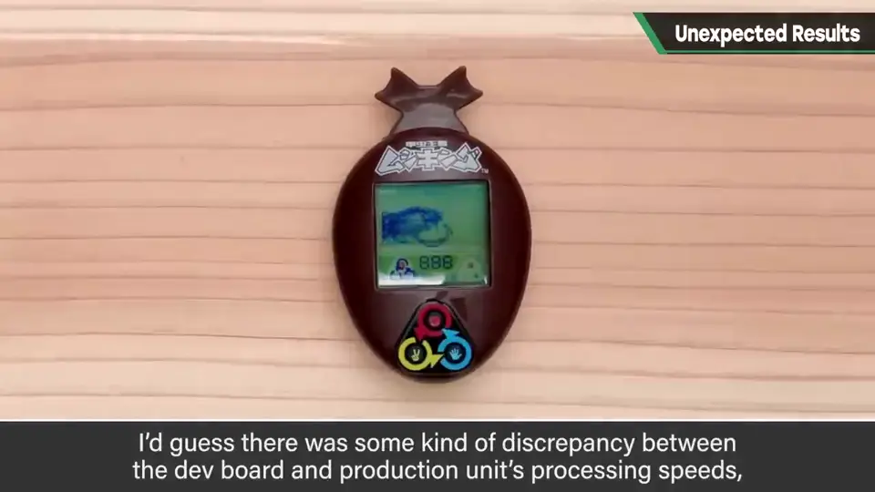
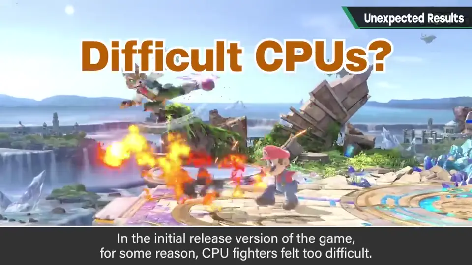
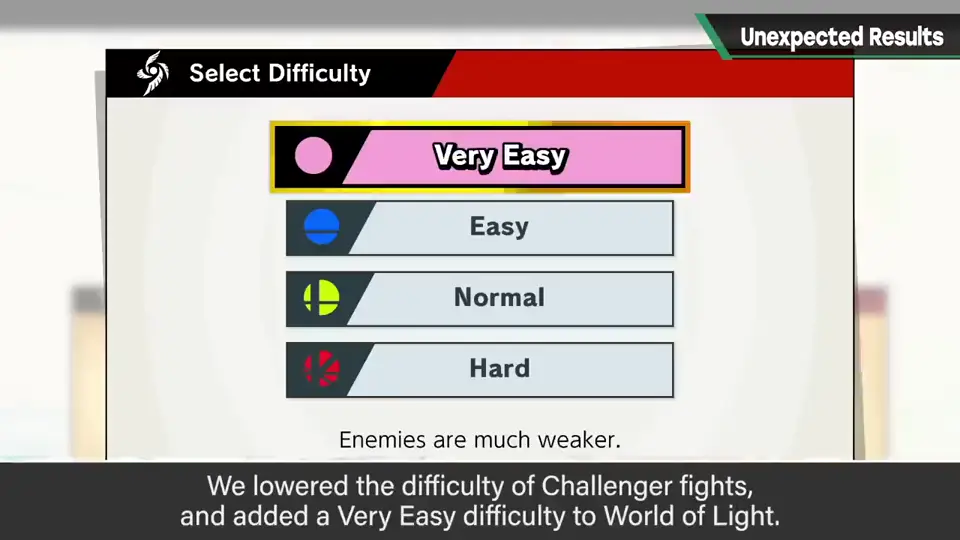
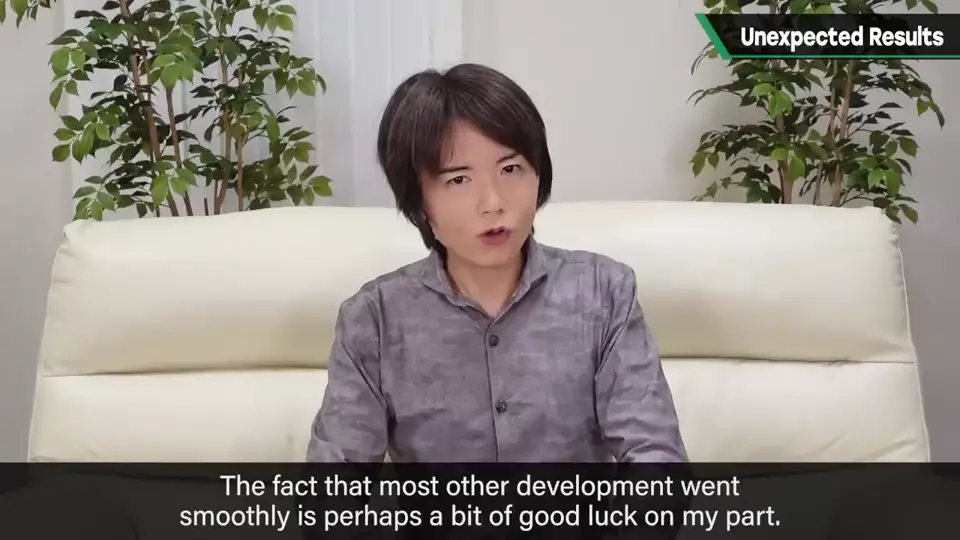

速览
樱井做过很多开发，产品版里发生意料之外的事、得到不满意结果的情况不少，他「忍着羞耻」介绍几个。《Meteos》：各种行星的参数是他亲手输入的，在 DS 实机上边确认边调整；日程很赶，后期争分夺秒地输入。但开发后期处理优化推进，结果游戏整体变快。动作变轻快本该欢迎，但内部处理直接依赖游戏速度，于是难度上升曲线变了——比预想更难。玩 Meteos 会很快进入难以应对的局面，这不是预期的，是他遗憾的回忆之一（原作以外的 Meteos 作品他没参与，一无所知）。甲虫王者 Mushiking 的养成掌机：用不到 1m 见方的大型手工开发板制作和调整全部内容，所以虽是便携游戏，他实际从没拿着玩过；成品做好一玩，发现虫子饿得比预想快——可能开发板与产品版处理速度有差异，结果有点严苛。《任天堂明星大乱斗 特别版》：最初发售的版本里不知为何各种 CPU 感觉偏强，多名员工也这么说，应不是错觉；原因至今不明，推测是优化过程中某些处理提升了。要改 CPU 思考或各模式难度，会让大量要素需要重新调试，做不到；但能做一定对策：调低挑战者（Challenger）对战难度、给「灯火之星」加入「非常简单」。这靠在线更新实现，没有更新的时代就无计可施。也许有人觉得「不可能」，但和电脑打交道，什么都可能发生；其他开发大致顺利，也许也是走钢丝、在危险的平衡上成立的；所有麻烦也不都在检查清单上。
1. 开场：产品版里的意外 0:03
樱井做过各种开发，但在产品版中发生了没预料到的事、最后得到无法接受的结果，这样的情况其实不少。他「忍着羞耻」介绍几例。

2. 《Meteos》：变快了，也变难了 0:20
开发《Meteos》时，各种行星的参数都是樱井亲手输入的。作品运行在 DS 上，他当然是在实机上边确认边调整。日程相当紧张，后期争分夺秒地输入——毕竟行星也很多。


然而在开发后期，处理优化不断推进，结果游戏整体变快了。动作变轻快本来值得欢迎，但内部处理直接依赖游戏速度，于是难度上升曲线改变了——变得比预想更难。
玩 Meteos 时会在很短时间内进入很难应对的局面，这并非预期，是他个人遗憾的回忆之一。

另外，原作以外还有几款 Meteos 作品，但除第一作外都是在他不知情时做的，他一概不了解。
3. 甲虫王者：饿得太快 1:38
还有一款甲虫王者 Mushiking 的养成掌机游戏，是在不到 1m 见方的大型手工开发板上制作的，全部调整都在上面进行。所以虽然是便携游戏，他实际上从未拿着它玩过。


成品做出来一玩，发现虫子饿得比预想快。大概因为某种原因，开发板与产品版的处理速度有了变化。不是不能玩，但结果有点严苛。
4. 《大乱斗 特别版》：CPU 偏强 2:14
《任天堂明星大乱斗 特别版》最初发售的产品版中，不知为何各种 CPU 感觉偏强。比前两个例子更暧昧，但多名员工都这么说，应该不是错觉。


原因至今不明。推测是优化中某些处理提升了，但没有定论。要修改 CPU 的思考或各模式设定的难度，大量要素就得重新调试，这做不到。
但能在一定程度上采取对策：把挑战者（Challenger）对战的难度调低，给「灯火之星」加入「非常简单」难度。
5. 和电脑打交道，什么都可能发生 3:18
有人也许会觉得「这种事不可能」。但面对的是电脑，什么都可能发生。其他开发大致顺利，也许也是在走钢丝、靠危险的平衡才成立的。

自测题
1. 《Meteos》为什么比预想更难？
后期优化让游戏变快，而内部处理依赖游戏速度，难度上升曲线因此改变。 0:38
2. 甲虫王者掌机为何虫子饿得太快？
在大型开发板上调整，开发板与产品版处理速度可能不同。 1:38
3. 《大乱斗 SP》CPU 偏强后采取了什么对策？
通过在线更新调低挑战者对战难度、给灯火之星加入「非常简单」。 2:40